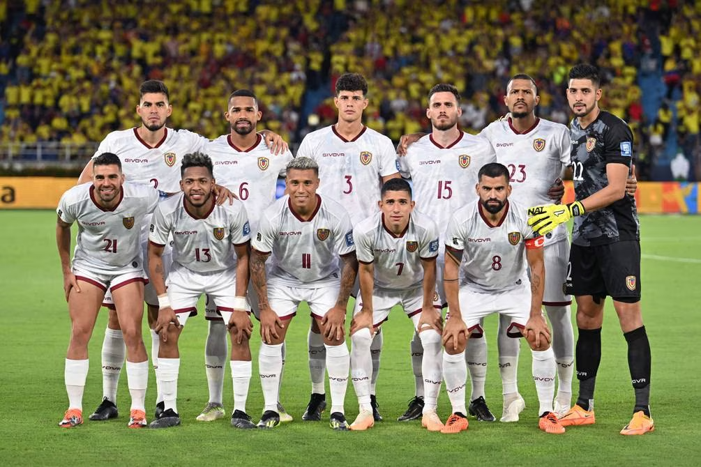

Menú
EL UNIVERSO
El Mayor Diario Nacional
Iniciar Sesión
Registrarse
Tamaño de Fuente:
A
Modo:
Tendencias
Sociedad
Cultura
Deportes
Destacados
Suscríbete
Muerte de Fernando Villavicencio dividió a directivos de Gente Buena, ¿cuál es el futuro del movimiento?
El 19 de septiembre será el examen de conocimientos para 103 candidatos a ser contralor del Estado
Luis Rubiales anuncia su renuncia como presidente de la Federación Española de Fútbol
Mostrar Previo
Mostrar Siguiente
Muerte de Fernando Villavicencio dividió a directivos de Gente Buena, ¿cuál es el futuro del movimiento?
El 19 de septiembre será el examen de conocimientos para 103 candidatos a ser contralor del Estado
Luis Rubiales anuncia su renuncia como presidente de la Federación Española de Fútbol en redes sociales
Lo último
En dos meses habría disponibilidad de pruebas para detectar fentanilo en Guayaquil
Hace 15 minutos
Así es la pequeña isla de playa virgen que está entre Ecuador y Perú
Hace 15 minutos
‘Estaban haciendo deberes’: niño de 5 años fue asesinado dentro de su casa en Durán
Hace 15 minutos
¿Alexander Domínguez, titular en Ecuador frente a Uruguay en la eliminatoria sudamericana?
Hace 15 minutos

Venezuela vs. Paraguay por las eliminatorias: horarios para ver en vivo
Hace 15 minutos
Videos
Mas..
Observatorio Astronómico de Quito llega a sus 150 años de fundación
Una hermosa casa es rodeada por los jardines y frondosos árboles del parque La Alameda, los botes de su laguna artificial y los comerciantes son los que le dan
Hace un mes
La casa donde los turistas crean sus propios instrumentos musicales
Hace un mes
Moisés Caicedo: ‘Ante Senegal faltó ambición y querer ganar el partido’
Hace un mes
Diego Almeida habla de su futuro en Europa y del aprendizaje con Xavi Hernández
Hace un mes
Los títeres cobran vida en un museo situado al pie del estero Salado
Hace un mes